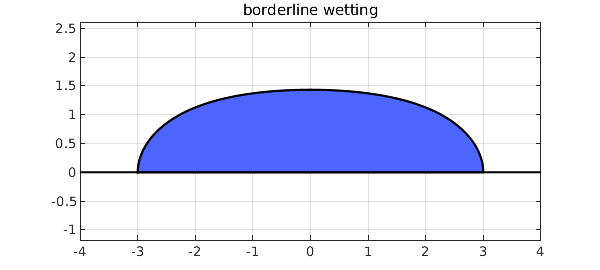
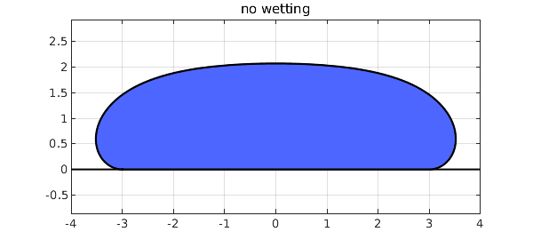
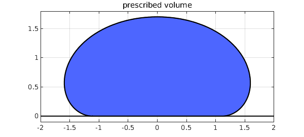

1. The equations
Suppose we put a drop of liquid on a solid surface. Under idealized conditions it will form an axisymmetric droplet (a ``sessile drop'') whose shape is determined by the contact angle and by the capillary constant of the liquid, $$ \kappa = {\rho g\over \sigma}, $$ where $\rho$ is the density, $g$ is the gravitational acceleration, and $\sigma$ is the surface tension. In engineering, the behavior of droplets is one of innumerable situations where surface tension plays a role, and we hope the reader has seen the movie [2] made by the second author's father at MIT in the 1960s, still available on YouTube after all these years. In mathematics, this is a prototypical problem in the area of capillary surfaces, on which a classic reference is the 1986 book [1] by Robert Finn at Stanford.
Suppose our goal is to calculate the generating curve that defines the shape of the droplet. As described in [3], we can do this by solving the equations $$ {dr\over ds} = \cos\psi, \quad {du\over ds} = \sin\psi, \quad {d\psi\over ds} = \kappa u - r^{-1}\sin\psi $$ where $s$ is the arc length along the curve, $r(s)$ is the radius, $u(s)$ is the height, and $\psi(s)$ is the angle of inclination of the curve. In this formulation $s\in [-L,L]$, where $L$, the total arc length of the curve starting at the center, is unknown a priori. For convenience we can rescale by defining $\tau = s/L$, so that the computational domain becomes $\tau \in [-1,1]$ and the equations are $$ {dR\over d\tau} = L \cos\Psi, \quad {dU\over d\tau} = L \sin\Psi, \quad {d\Psi\over d\tau} = \kappa L U - L R^{-1}\sin\Psi. $$
2. Example: borderline wetting
Let's use Chebfun to compute a simple droplet. We set the contact radius to $3$ and we fix the contact angle as $\pi/2$, corresponding to a liquid at the borderline of wetting/not wetting the solid. We use the traditional scaling of the problem so that $\kappa = 1$. Here is the shape.
tic
b = 3; Psib = -pi/2;
N = chebop(-1,1);
N.op = @(t,R,U,Psi,L) [diff(R) - L*cos(Psi)
diff(U) - L*sin(Psi)
R*diff(Psi) + L*sin(Psi) - R*L*U
diff(L)];
N.bc = @(t,R,U,Psi,L) [R(-1)+b; R(1)-b; Psi(-1)+Psib; Psi(1)-Psib];
t = chebfun('t');
N.init = [b*t; 1+0*t; t*Psib; 2*b+0*t];
[R,U,Psi,L] = N\0;
U = U - min(U);
LW = 'linewidth'; blue = [.3 .4 1];
plot([-b-1;b+1],[0;0],'k',LW,1.5) , hold on
fill(R,U,blue), plot(R,U,'k',LW,1), hold off
axis equal, grid on, title('borderline wetting')

3. Example: no wetting
Let's change the contact angle to $\pi$, so the liquid minimally wets the surface. If a liquid has a contact angle greater than $\pi/2$, this is described as ``not wetting''.
Psib = -pi;
N.bc = @(t,R,U,Psi,L) [R(-1)+b; R(1)-b; Psi(-1)+Psib; Psi(1)-Psib];
N.init = [b*t; 1+0*t; t*Psib; 2*b+0*t];
[R,U,Psi,L] = N\0;
U = U - min(U);
plot([-b-1;b+1],[0;0],'k',LW,1.5) , hold on
fill(R,U,blue), plot(R,U,'k',LW,1), hold off
axis equal, grid on, title('no wetting')

4. Computational remarks
In Chebfun, our computations have proceeded in the simplest possible manner. We worked on $[-1,1]$, though $[0,1]$ would also be possible with Neumann boundary conditions. We multiplied through by $R(\tau)$ to avoid the singularity at $R=0$. We included the unknown parameter $L$ in the problem via a trivial additional differential equation $dL/dt = 0$, though one could also use an explicit parameter formulation as described in section 7.10 fo the Chebfun Guide.
Here is how long the computations took,
toc
Elapsed time is 6.631103 seconds.
and here are the lengths of the computed functions $R$, $U$, and $\Psi$:
[length(R) length(U) length(Psi)]
ans =
50 51 50
All this can be done more efficiently by bypassing Chebfun overhead, using spectral methods more carefully as described in [3].
5. Prescribing the volume
The prescription of the radius $b$ where the liquid meets the supporting plane is a mathematical construction to make for a nice boundary value problem. It might be more physically realistic to prescribe a volume of the liquid and treat that radius $b$ as a free parameter.
While it would be possible to compute the volume of the droplet numerically, a neat computation turns this into evaluating the solution in the following formula. To derive this, we note one form of the differential equations is $$ (r\sin\psi)_r = ru $$ and this holds for any portion of the curve except at the vertical point. We take the initial height $u = u_0 < 0$ when $r=0$. Then we use the method of washers to compute the volume $$ V = \int^{u_0}_u \pi r^2\, du = -\pi r^2u - 2\pi\int^0_r \rho u\, d\rho = -\pi r^2u - 2\pi\int^0_r (\rho\sin\psi)_\rho\, d\rho = -\pi r^2u + 2\pi r\sin\psi.$$ This gives the volume formula $$ V = 2\pi b\sin\psi_b - \pi b^2 U(1) $$ for the computed curve before the vertical translation. We can include this formula to measure the volume of a drop we have computed with the modification.
[R,U,Psi,L] = N\0; pi*b*(2*sin(Psib)-b*U(1))
ans = 62.621687652005107
We can also use this formula to build an equation that must be solved in the boundary conditions, while we add the radius $b$ to the list of parameters.
Psib = -pi; v0 = 10;
N = chebop(-1,1);
N.op = @(t,R,U,Psi,ell,b) [diff(R) - ell*cos(Psi)
diff(U) - ell*sin(Psi)
R*diff(Psi) + ell*sin(Psi) - R*ell*U
diff(ell)];
N.bc = @(t,R,U,Psi,ell,b) [R(-1)+b
R(1)-b
Psi(-1)+Psib
Psi(1)-Psib
pi*b*(2*sin(Psib)-b*U(1))-v0];
t = chebfun('t'); bguess = nthroot(v0,3)/2;
N.init = [bguess*t; bguess*(-2+cos(t*Psib)); t*Psib; 2*bguess+0*t; bguess+0*t];
[R,U,Psi,ell,b] = N\0;
U = U - min(U);
plot([floor(min(R));ceil(max(R))],[0;0],'k',LW,1.5) , hold on
fill(R,U,blue), plot(R,U,'k',LW,1), hold off
axis equal, grid on, title('prescribed volume')

Finally, we note that sometimes nonlinear problems can be quite sensitive to the supplied initial guess. In this volume constrained problem, we find that Chebfun gives the correct answer for the problem above, but if the contact angle is changed too much, then the solver does not find a solution. More robust initial guesses are discussed in [3].
References
[1] R. Finn, Equilibrium Capillary Surfaces, Springer Science & Business Media, 2012 (originally published in 1986).
[2] L. M. Trefethen, Surface Tension in Fluid Mechanics, https://www.youtube.com/watch?v=sfyAkFc66bE (movie created in 1963).
[3] R. Treinen, Spectral methods for capillary surfaces described by bounded generating curves, arXiv:2205.02931v2, 2022.